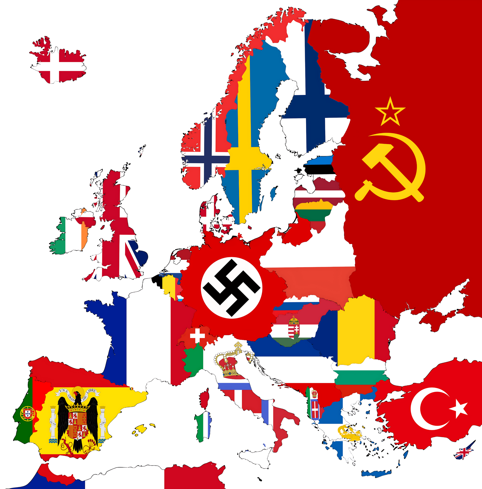
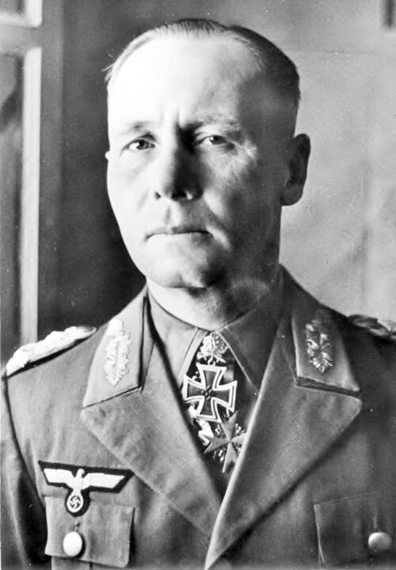
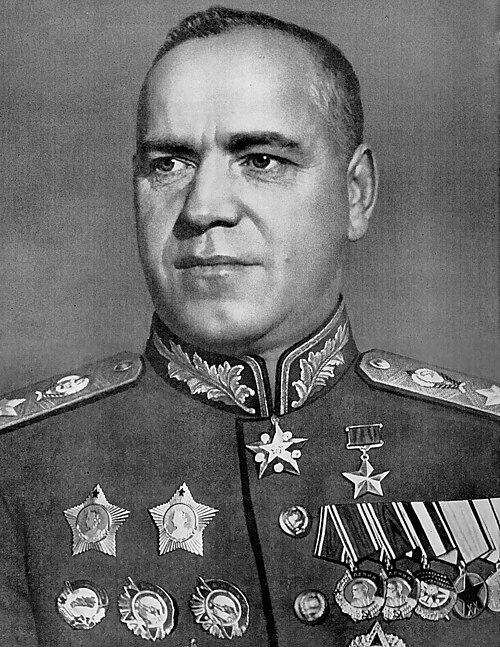
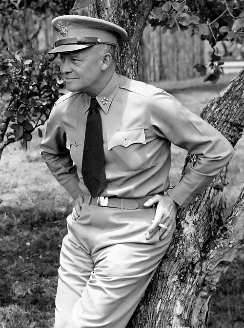
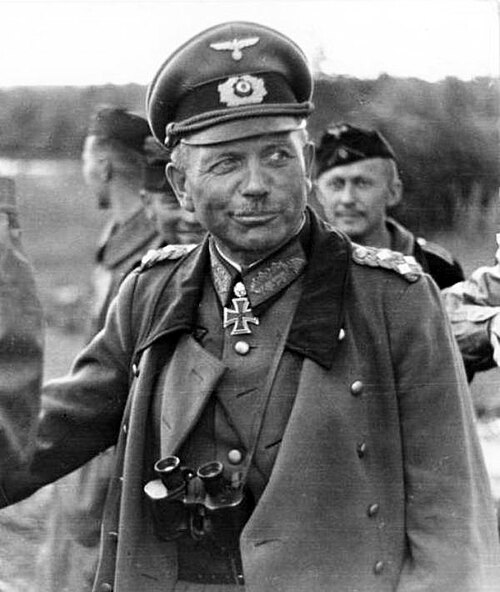
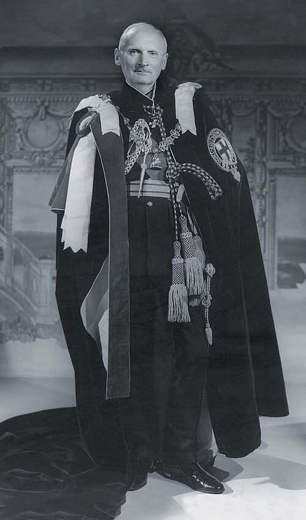
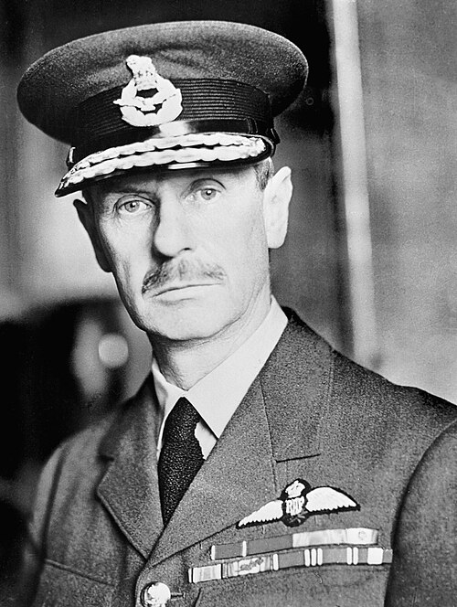

Batallas, comandantes, frentes y mapas del conflicto más grande de la historia (1939–1945), documentados de forma abierta, neutral y verificable.
Empieza por el contexto: seis años de tensiones que hicieron inevitable el conflicto.
Fichas con fechas, bandos, comandantes, desarrollo y consecuencias, ordenadas por fecha de inicio.
La invasión germano-soviética que dio inicio a la Segunda Guerra Mundial y estrenó la guerra relámpago.
Inicio de la guerra BlitzkriegFinlandia resiste durante meses la invasión soviética y deja en evidencia al Ejército Rojo.
Finlandia vs URSSLa invasión combinada de Dinamarca y Noruega para asegurar el mineral de hierro y el Atlántico Norte.
Dinamarca y Noruega Operación combinadaLa invasión de Países Bajos, Bélgica y Luxemburgo abre la ofensiva alemana en el oeste.
Eben-Emael RóterdamEl "corte de hoz" por las Ardenas rodea la Línea Maginot y derrota a Francia en seis semanas.
Blitzkrieg Línea MaginotLa RAF frena a la Luftwaffe en el aire y frustra la invasión alemana del Reino Unido.
Guerra aérea RAF vs LuftwaffeLa larga guerra de los submarinos alemanes contra los convoyes que abastecían al Reino Unido.
U-Boote ConvoyesEl Eje invade Yugoslavia y Grecia y asegura su flanco sur antes de atacar a la URSS.
Yugoslavia y GreciaLa mayor invasión de la historia: Alemania ataca a la Unión Soviética y abre el Frente Oriental.
Frente Oriental LebensraumCasi 900 días de cerco y hambre; uno de los asedios más mortíferos de la historia.
Cerco Carretera de la VidaLa Operación Tifón se estrella ante la capital soviética: primera gran derrota terrestre alemana.
Operación TifónFrente Oriental. Punto de inflexión de la guerra tras el cerco de la Operación Urano.
Frente Oriental Victoria soviéticaLa mayor batalla de tanques de la historia; Alemania pierde para siempre la iniciativa en el este.
Operación Ciudadela PrójorovkaEl desembarco en Sicilia saca a Italia de la guerra y abre una dura campaña por la península.
Sicilia MontecassinoEl Día D: el desembarco de Normandía abre el segundo frente en Europa occidental.
Día D NormandíaEl ambicioso salto aerotransportado sobre los puentes de los Países Bajos fracasa en Arnhem.
Arnhem AerotransportadaLa última gran ofensiva alemana en el oeste fracasa tras la resistencia en Bastoña.
Wacht am Rhein BastoñaLa ofensiva soviética final toma la capital del Reich y pone fin a la guerra en Europa.
Reichstag Fin del ReichLa guerra del desierto (1940-1943): el pulso entre el Eje y los Aliados por Egipto, Libia y el Mediterráneo, en orden cronológico.
La primera gran ofensiva británica destruye al 10.º Ejército italiano en Libia.
Reino Unido vs ItaliaLas "ratas de Tobruk" resisten 241 días el cerco del Afrika Korps de Rommel.
AsedioLa obra maestra de Rommel: una maniobra envolvente que derrota a los británicos y toma Tobruk.
Rommel Bir HakeimMontgomery derrota a Rommel: el punto de inflexión de la guerra del desierto.
Montgomery Punto de inflexiónEl desembarco angloestadounidense en Marruecos y Argelia atrapa al Eje en África.
Desembarco EisenhowerKasserine y la resistencia final del Eje, que se rinde en masa: fin de la guerra en África.
Kasserine "Tunisgrad"Más allá de las batallas: los líderes, la diplomacia, la sociedad y la economía del conflicto.
Los líderes de cada nación en guerra, con su biografía completa e imagen.
BiografíasEl Eje, los Aliados y los pactos que definieron los bandos de la guerra.
DiplomaciaPolíticas sociales, persecución, el Holocausto y el sistema de campos de concentración.
Historia socialEconomía de guerra, autarquía, trabajo forzado y la industria como arma decisiva.
Economía de guerraEl continente al comienzo de la guerra, con cada país coloreado con su bandera de la época. Pasa el ratón por encima de cada nación para ver su situación en 1939.

Mapa de banderas de Europa en 1939 (Wikimedia Commons). Pasa el ratón por encima de cualquier país para ver su situación en 1939.
Banderas de época de las naciones implicadas en el conflicto, en su contexto histórico y documental, agrupadas por bando.
Alemania nazi (1935–1945)
Reino de Italia
Imperio del Japón
Reino de Rumanía
Reino de Hungría
Gran Alianza
Bandera de 48 estrellas
Aliada desde 1941
Tercera República
Resistencia de De Gaulle
República de China
Primer país invadido
Invadida en 1940
Invadidos en 1940
Ocupada en abril de 1940
Invadida en abril de 1940
Régimen colaboracionista
"No beligerante" pro-Eje
Más detalle sobre cada bando en el apartado de Alianzas.
Algunos de los mandos militares más influyentes del conflicto. Consulta la lista completa por bando en la página de Comandantes.

Mariscal de campo alemán, el "Zorro del Desierto". Destacó en la Batalla de Francia y en el Norte de África.
Eje
Mariscal soviético, el mando más destacado del Ejército Rojo, de Stalingrado a Berlín.
Aliados
General estadounidense, comandante supremo aliado en Europa; dirigió el desembarco de Normandía.
Aliados
General alemán de blindados, ejecutor de la Blitzkrieg al frente de las divisiones Panzer.
Eje
Mariscal de campo británico, vencedor de El Alamein y mando aliado en Normandía.
Aliados